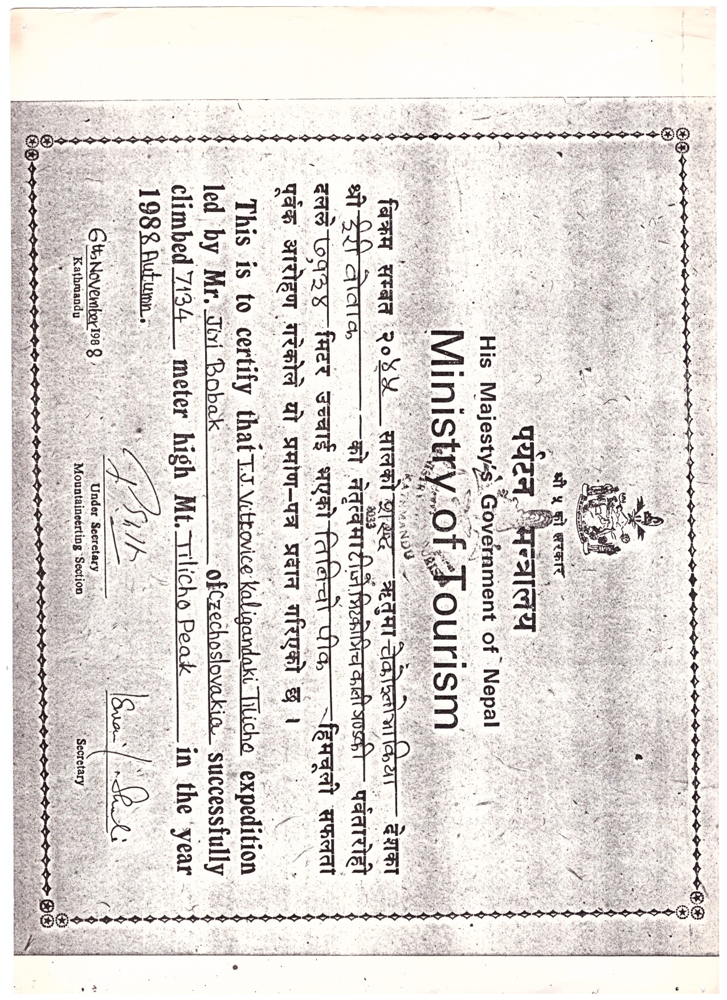

Rozhovor s mým dědou
Pro svůj rozhovor jsem si vybral mého dědu Leoše Večerka. Za mládí byl člen kanoistického týmu, kde jednu dobu působil jako trenér. Od malička sportoval a ke sportu vedl i své syny Radka, Michala a Zdeňka (můj táta). Po revoluci začal podnikat jako stolař a nyní je v důchodu, ale občas si přivydělává výrobou dřevěných hraček, jako např. meče nebo halapartny. Procestoval značnou část Evropy a část Asie, takže má mnoho zážitků, o kterých bych mohl psát, ale jeden z nich byl přece něčím zvlášť výjimečný. Jedná se o expedici 12členného kanoistického týmu do Nepálu roku 1988, kde poprvé zdolali řeku Kali Gandaki. Byl to úspěch nejen pro něj, ale i pro Československo, protože do té doby tuto řeku nikdo nezdolal. K rozhovoru přidávám části z deníku, který si děda cestou psal po odjezdu z domova.
Za mládí jsi hodně cestoval. Kde všude jsi teda byl?
Za totality nebylo lehké vycestovat do zahraničí, ale do zemí východního bloku se dalo relativně volně cestovat. Několikrát jsem byl v Polsku a v NDR (Německá demokratická republika). V roce 1988 jsem byl služebně v Indii a v Nepálu, a v roce 1989 na 4 měsíce služebně v Rusku, v Moskvě. Po revoluci jsem projel velkou část západní Evropy např. Itálii, Francii nebo Španělsko.
Expedice do Nepálu pro tebe teda byl velký zážitek?
Ano, bylo to něco jedinečného. Měli jsme možnost reprezentovat Československo a něco dokázat. Každé dítě má svůj sen. Jako 18letý sportovec se chceš někam dostat a něčeho dosáhnout. Hokejista se chce třeba dostat do NHL, nebo tvůj taťka, který hrál basketball chtěl hrát v NBA. Já jsem se kanoistice hodně věnoval a toto byla pro mě šance se někam dostat.
Jak dlouho ses věnoval kanoistice a co tě k ní přivedlo?
Přivedl mě k ní můj táta, tvůj praděda. Bydleli jsme v Kravařích, kde je loděnice a od 10 roků jsem tam trénoval jako vodák. Pak jsem přešel do Kanoe u Opava, kde založili kanoistický oddíl. Předtím tam byl pouze turistický oddíl, kde jen sjížděli vodu. Tak jsem se tomu začal věnovat závodně. Společně s jedním klukem, který se expedice také účastnil, jsme se stali mistry republiky v dorostu.
Takže díky tvým zkušenostem jsi byl vybraný na expedici?
Ten sjezd nebyl nic jednoduchého. Byla zapotřebí vysoká sportovní úroveň a disciplína, kterou jsem za zhruba 20 let praxe měl. Navíc vedoucí expedice pochází z Ostravy a jednou za mnou přišel a nabídnul mi místo jako členu expedice.
Jak teda probíhala příprava na výjezd?
Expedice byla obrovská, takže příprava trvala dost dlouho. Museli jsme získat peníze od sponzorů. Celá expedice stála 1 500 000 Kč, což v tu dobu byla spousta peněz. Krom nás kanoistů zahrnovala expedice ještě tým 8 horolezců, kteří měli vystoupat na horu Tilicho Peak. Zajistili jsme auto, Tatru a 1,5 tun potravin. Připravovali jsme lodě a trénovali na řekách u nás v republice. A samozřejmě se řešili i úřední věci. Pro představu, jak dlouho příprava trvala, roku 1985 jsme dostali nabídku a roku 1988 jsme teprve vyjeli.
Jak to, že tuhle řeku ještě nikdo předtím nesjel?
Řeku kromě nás chtěli sjet Angličané a Francouzi. Tenkrát byl Nepál království a Nepálský král sjezd slíbil nám, Československu. Nabídku dostal Jiří Bobák, který byl náš vedoucí. Bobák vedl mnoho expedic, sjížděl Amazonku a už jednou byl v Nepálu, takže měl hodně zkušeností.
Cesta z Československa do Nepálu je dlouhá. Jak jste tam jeli a byly nějaké potíže?
Na cestu jsme byli rozděleni do 3 skupin. První skupina jela autem do Jugoslávie, z Jugoslávie do Karáčí (přístav v Pákistánu) a měli jet do Indie, do Dillí. Druhá skupina, ve které jsem byl já, letěla z Frankfurtu letadlem do Dillí. Třetí skupina, vedoucí, lékař a tlumočník, letěli rovnou do Kathmandu (hlavní město Nepálu) vyřizovat potřebné doklady a zajistit nosiče. Největší problém s cestou byl ten, že první skupina nemohla projet přes Pákistán. Kvůli politickým problémům nedostali povolení projet a zůstali v Karáčí, mezitím co my jsme byli na Českém velvyslanectví v Dillí. Trvalo 3 týdny, než se to vše vyřešilo, ale měli jsme díky toho čas trochu poznat život v Dillí.
První strana dědova deníku popisující cestu a první den v Indii

A jaký teda byl život v Dillí?
V místě, kde jsme bydleli byl klid. Procházeli jsme obchody a ulice s krásným luxusním zbožím, šperky, suvenýry ze dřeva a ze slonoviny, kožené výrobky, a vše za velké ceny. Ale abys poznal pravý život lidí musíš jít mezi ty chudé a průměrné. Proto jsme se vydali do staré Dillí, podívat se na mešitu. Všude moře lidí, velká chudoba a špína. Domy z rákosí a z hlíny, připadal jsem si jak v pravěku. Byl jsem v šoku z toho, co jsem viděl na bleších trzích, kde se prodávali věci, o kterých bychom řekli, že jsou smetí, jako třeba krabice od televize nebo lednička bez dveří. Evropské zboží pro ně byl luxus. Vidíme malé krámky se vším různým zbožím, holiče stříhajícího na ulici, zubní ordinaci na ulici, pekaře na ulici a mezi tím vším jezdí kolorikša. Jsme běloši, takže pro místí jsme byli hodně zajímaví, ale hlavně bohatí. Všichni nám něco nabízeli a chtěli se fotit, ale bez pochyb to byl ohromný zážitek.
Návštěva svatby milionáře

Pokračování návštěvy a čekání na auto z Karáčí

Po třech týdnech čekání jste se teda vydali do Nepálu?
Ano. Autem jsme jeli do Pokhary, odkud jsme se pěšky vydali na výšlap do Jomsomu. Byla to 10 dní dlouhá cesta, při které jsme vyšli okolo 3 000 km, než jsme se dostali do Jomsomu. Poté jsme museli ještě víš, do osady Kagbeni, kde jsme měli vyplout po řece.
Říkal jsi, že jste s sebou brali hodně zásob. Jak jste je vzali s sebou na výšlap?
Na to jsme měli nosiče. V Katmandu vedoucí zajistil 15 nosičů pro osobní věci a dalších 35 na potraviny a jiné věci důležité k cestě jsme zajistili v Pokhaře. Všichni nosiči byli hodně mladí. Nejmladšímu bylo 14 let. Každému z nich jsme dali oblečení na výšlap a sud s věcmi vážící 30 kg, které nesli buď na zádech nebo na hlavě. Dostávali od nás mzdu 3 dolary na den a když jednomu z nich došly zásoby, které mu byly přiděleny, poslali jsme ho zpět dolů.
Co zajímavého jsi cestou viděl?
Procházeli jsme mnoha vesnicemi, kde nás vítali a obdarovávali ovocem. Bylo tam hodně restaurací, ve kterých jsme si dávali oběd. Restaurace často měli velký jídelní lístek, ale my jsme si převážně dávali jen čaj s mlékem a zeleninovou polévku. Skvělé na tom bylo, že víš, že dostaneš čerstvé jídlo. Objednal sis a viděl jsi kuchaře jít na zahrádku, sklidit nějakou zeleninu a pak ji před tebou čerstvě připravil. Při jídle jsme si mohli v klidu odpočinout od bolestivého stoupání.
Nejpěknější ovšem byl ten výhled. Skoro celou cestu jsme měli krásný výhled na horu Annapurnu. Pro místní to samozřejmě nebylo nic extra, protože na ni mají výhled pořád, ale pro nás jako turisty to byl neobyčejný pohled. Mezi horami je údolí, ve kterém tečou křišťálově čisté řeky, které při odrážení měsíčního svitu vypadají opravdu nádherně. Při takovém okamžiku jsem myslel na mou ženu a děti. „Jak se asi mají?“
Muselo to být těžké být takovou dobu bez rodiny, cestou jsi na ně musel hodně myslet. Měli jste možnost nějak komunikovat se svými blízkými?
Jediná možnost v tu dobu byla napsat dopis, ale trvalo to několik týdnů, než dopis došel. Kdyby se nám něco stalo tak by o nás nikdo nevěděl. Řekl jsem tvé babičce ať mi žádné špatné zprávy nepíše, třeba kdyby byl jeden ze synů nemocný nebo se někomu něco stalo, protože bych se o tom stejně dozvěděl pozdě a na takovou dálku s tím nic neudělám. Člověk by pak byl celý bez sebe a nedokázal by se soustředit, na to, co se děje kolem něj. Pár dopisů jsem napsal, ale moc jich nebylo.
Teď teda k hlavnímu cíli vaší cesty. Jak probíhal sjezd řeky Kali Gandaki?
Sjezd jsme provedli z nadmořské výšky 3 150 m. Řeka pramení v horách, z ledovce, tudíž byla neskutečně ledová, a protéká mezi horami Annapurnou a Dhaulgiri, v nejhlubším údolí na světě, takže nás čekal strmý a nebezpečný sjezd. Sjíždělo nás 5. Na začátku cesty jsme každý jeli ve svém kajaku. Já měl za úkol cestu natočit, takže jsem měl na přídi kajaku připevněnou velkou voděvzdornou kameru. Nejhorší bylo, že jsem nevěděl, co natáčím, takže jsem musel doufat, že mám dobré záběry. Voda byla divoká a museli jsme se vyhýbat balvanům, které měnily koryto řeky. Jedou jsem se kvůli silné vodě málem utopil. Kajak se mi převrátil a s váhou kamery bylo těžké ho obrátit. Naštěstí se mi to na druhý pokus podařilo a nic se mi nestalo.
Vlivem kamenitého dna a divoké vody se všechny naše kajaky postupně zničili. Trosky odnesla voda a byli jsme nuceni kajaky opustit. Naštěstí jsme měli připravený speciálně upravený raft, který jsme přezdívali Matilda. Raft nebyl standardní, byl složen z šesti nafukovacích válců o průměru 60 cm a délce 6,5 metru. Na řízení raftu jsme museli všichni přiložit ruku k dílu. V každém rohu seděl někdo s pádlem a u přídě byl kameraman, který krom natáčení musel navádět posádku u zádi, jakým směrem mají plout, protože kvůli délce raftu neviděli na hladinu řeky. Třikrát nás málem smetla voda a několik z nás spadlo, ale díky bezpečnostním opatřením, např. uvázání na 3metrovém laně pro případ uvíznutí tonoucího pod raftem, jsme všichni dopluli bez většího zranění. O naší expedici byly natočeny 3 dokumentární filmy a napsáno mnoho novinových článků.
Po sjezdu jsme byli pozváni na recepci Nepálského krále. Mysleli jsme si, že si dáme čaj s Nepálským králem, ale místo něj přišel jeho vrchní ministr. Každopádně to pro nás byla velká pocta.
Plavidlo Ramro použito na druhou polovinu sjezdu
V popředí vlevo sedí můj děda Leo Večerek

Část deníku popisující cestu kajaky


V Nepálu jsi byl poprvé. Co tě tam nejvíce zaujalo/šokovalo?
Dost mě šokovalo, kolik tam bylo turistů. Himaláje jsou nevětší hory světa, tak jsem si myslel že kromě horolezců tam moc lidí nebude. Velice jsem se mýlil. Cestou jsme potkali hodně turistů na výšlapech. Němci, Poláci, Angličané, Francouzi, prostě všechny možné národnosti. S mnohými z nich jsme si povídali, sdíleli naše pocity a seděli s nimi u táboráku.
Další věc, která mě překvapila byla, jak skromně, ale spokojeně tam lidé žili. První dojmy byly: „Tu se musí špatně žít, v takových podmínkách přece nejde normálně fungovat“, ale po určitém čase strávený v této společnosti jsem si řekl: „Co těm lidem chybí?“ Základní potraviny mají, střechu nad hlavou také mají a víc nepotřebují. Nepálec měl zahrádku a buvola, a to mu k životu stačilo. Auta neměli, takže když chtěl Nepálec navštívit jinou vesnici musel ujít mnoho kilometrů pěšky. Ale nic víc nepotřeboval. To, co nezná, mu nemůže chybět.
Poslední otázka, chtěl by ses někdy do Nepálu vrátit?
Samozřejmě že bych se tam rád znovu podíval, ale už by to nebylo to stejné jako předtím. V tu dobu to bylo něco jedinečného, mít možnost se dostat do takových exotických zemí, ale dnes se můžeš dostat kamkoliv, pokud máš peníze. Samotný Nepál se za tu dobu hodně změnil. Mluvil jsem s jedním pánem, který nedávno navštívil Nepál a řekl mi, že je to tam úplně jiné. Všude jsou udělané asfaltové cesty, i tam kde jsme prováděli výstup, takže stačí vzít pořádné auto a můžeš tam dojet. V každé domácnosti je elektřina a mobilní telefony jsou tam běžné. Tímto země, jako je Nepál, ztrácí svůj půvab. Staré zvyky, které zde byly, skoro kompletně vymizely. O čem je cestování do exotických zemí, když uvidím stejné věci, jako ty, co máme u nás doma.
Chtěl jsem se tam znovu podívat, ale musel jsem služebně odjet do Ruska. Za 3 dny po mém návratu došlo k revoluci a já poté začal podnikat. Nebyl už čas cestovat. Plně jsem se věnoval podnikání a uživení mé rodiny.
Bylo pěkné si popovídat s dědou o jeho zážitku. Ne každý má dědu, o kterém může říct, že něco takového zažil a jsem na to velice pyšný.
Dodatečné obrázky
Potvrzení o zdolání hory Tilicho Peak horolezci
Potvrzení o sjezdu řeky Kali Gandaki
.jpg)
Výstřižek z novin týkající se cesty

Závěrečná zpráva o průběhu expedice

Dědovo povolení k průjezdu a Nepálské rupie